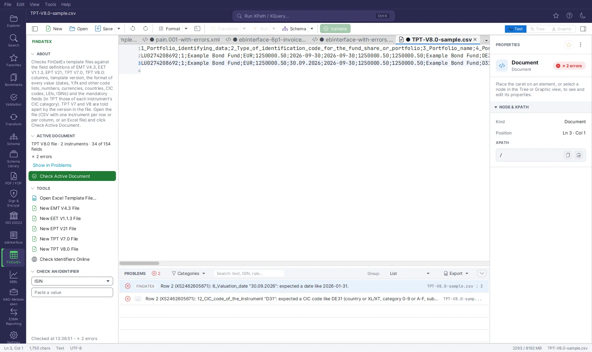
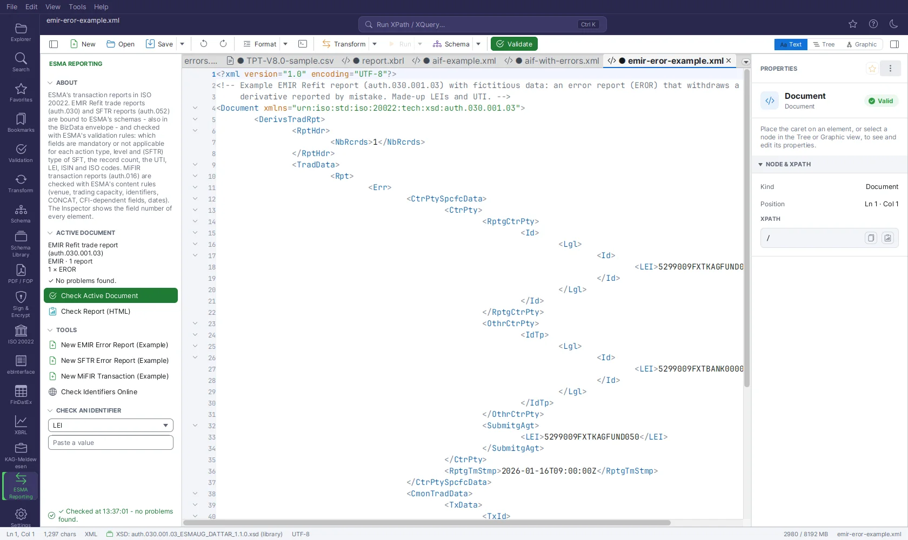

Spricht Ihren Standard
Optionale Erweiterungen prüfen Dokumente gegen die Regeln von Standards der Finanzbranche und der öffentlichen Verwaltung, nicht nur gegen deren Schema. Schalten Sie die benötigten unter Einstellungen → Erweiterungen ein.

FundsXML
Fondsdaten im Format FundsXML 4 – das Schema wird automatisch gebunden, und die Prüfungen gehen darüber hinaus.
- 54 Prüfungen der Datenqualität, jede mit Schweregrad und XPath
- Positionsgewichte, Summen und Kennungen gegeneinander geprüft
- Grid-Ansicht für Positionen, Anteilsklassen und Portfolios
- Willkommensseite und Vorlagen für neue Dokumente

ISO 20022 und SEPA
pain-, pacs- und camt-Nachrichten in 19 Versionen, mit Kontrollsummen und den SEPA-Regeln des EPC.
- Schemas werden automatisch gebunden
- Kontrollsummen und Anzahl der Transaktionen werden nachgerechnet
- Prüfziffern von IBAN, BIC und LEI
- Beispiele für SEPA-Überweisung und SEPA-Lastschrift

FinDatEx-Templates
EMT-, EET-, EPT- und TPT-Dateien in den Versionen 7 und 8, als CSV oder Excel.
- Pflichtfelder je Template, Version und CIC-Kategorie
- Codelisten, Formate und Prüfziffern von ISIN / LEI
- Neue Template-Dateien und Excel-Import

XBRL
XBRL-Instanzen und Inline-XBRL-Berichte, validiert mit Ihrer eigenen Arelle-Installation.
- Befunde in der Problemliste mit ihrer Zeile
- Arelle-Kommandozeile wird zur Wiederverwendung angezeigt

ebInterface
Österreichische XML-E-Rechnungen in den Versionen 4.1 bis 6.1.
- Positions-, Steuer- und Summenberechnungen geprüft
- Österreichische UID-Nummern, IBAN und BIC
- Beispielrechnung in ebInterface 6.1

FMA-Meldewesen
Meldungen österreichischer Pensionskassen und Verwaltungsgesellschaften an die Finanzmarktaufsicht.
- PK-Meldewesen: Quartals- und Jahresmeldungen der Pensionskassen mit den Prüfregeln der FMA
- KAG-Meldewesen: AIFMD-Dateien, Geldmarktfonds-Meldung und Derivate-Risikomeldung (4. DeRiMV)
- Feldnummer, Name und Regel jedes Elements im Editor
- Prüfberichte als HTML, gruppiert nach Regel

ESMA-Meldewesen
Handelsmeldungen nach EMIR Refit, SFTR-Meldungen und MiFIR-Transaktionsmeldungen mit den Validierungsregeln der ESMA.
- Pflichtfelder, bedingte und optionale Felder je Aktionstyp
- Bedingte Regeln und Datumsreihenfolgen aus dem Regeltext der ESMA
- Prüfbericht, gruppiert nach Regel und Feld
LEI und ISIN, auf Wunsch online geprüft
Jeder LEI eines Dokuments lässt sich bei GLEIF nachschlagen, jede ISIN bei ESMA FIRDS und OpenFIGI: abgelaufene oder stillgelegte LEIs, ISINs ohne Handelsplatz, CFI-Codes und Emittenten, die nicht zusammenpassen. Werte verlassen Ihren Computer nur, wenn Sie klicken oder die Prüfung einschalten.
Online-Prüfung von KennungenEine Erweiterung schreiben
Erweiterungen sind Java-Plugins: eine Aktivität mit Seitenbereich, Menüeinträge, Validatoren, die bei jeder Prüfung mitlaufen, Schemas für die Schema-Bibliothek und Beschreibungen für den Eigenschaften-Bereich. Eine dokumentierte API und ein Beispielprojekt erleichtern den Einstieg.
Erweiterungen installieren und verwaltenProbieren Sie es mit Ihren eigenen Dateien
Die Erweiterungen sind in jedem Download enthalten. Schalten Sie sie unter Einstellungen → Erweiterungen ein.